#1109: [CT] PCR Testing: report PCR testing (vs lumped PCR and antigen) and add positive/negative PCR test results
Issue number 1109
space-buzzer opened this issue on February 23, 2021, 10:51 AM PST
Labels Data quality
Target Date: From the beginning of time till now Overview: CT started reporting lumped testing value on its dashboard, it was a single number for both PCR and antigen testing. There is a state published dataset that has the break down by test type and result. We will use it to backfill PCR-only testing, and positive and negative PCR specimens.
This is step 2 after #1088
Comments
#1109: [CT] PCR Testing: report PCR testing (vs lumped PCR and antigen) and add positive/negative PCR test results
Issue number 1109
space-buzzer opened this issue on February 23, 2021, 10:51 AM PST
Labels Data quality
Target Date: From the beginning of time till now Overview: CT started reporting lumped testing value on its dashboard, it was a single number for both PCR and antigen testing. There is a state published dataset that has the break down by test type and result. We will use it to backfill PCR-only testing, and positive and negative PCR specimens.
This is step 2 after #1088
Comments
CT started lumping PCR and antigen tests on Nov 5th, 2020. This will correct the reported lumping by CTP
#1108: [CT] Remove values carried over after Connecticut stopped reporting Recovered on 10/22/2020
Issue number 1108
jaclyde opened this issue on February 22, 2021, 8:02 PM PST
Labels Data quality
State: Connecticut
Issue: On October 22, 2020, Connecticut included the Recovered metric in their weekly report for the last time. We carried over the last available value, but the metric has not returned, so the value is out of date and potentially confusing. We will be keeping the time series as provided by the state, but removing the carried over values from October 29, 2020, forward (since the metric was updated weekly before it was removed).
Comments
Values Removed: Changes (3).txt
- [x] make GH issue
- [x] double check the metrics aren't being reported somewhere by the state
- [x] remove carried over values
- [x] null out source notes
- [x] null out WS2 values
- [x] update public note
#1108: [CT] Remove values carried over after Connecticut stopped reporting Recovered on 10/22/2020
Issue number 1108
jaclyde opened this issue on February 22, 2021, 8:02 PM PST
Labels Data quality
State: Connecticut
Issue: On October 22, 2020, Connecticut included the Recovered metric in their weekly report for the last time. We carried over the last available value, but the metric has not returned, so the value is out of date and potentially confusing. We will be keeping the time series as provided by the state, but removing the carried over values from October 29, 2020, forward (since the metric was updated weekly before it was removed).
Comments
Values Removed: Changes (3).txt
- [x] make GH issue
- [x] double check the metrics aren't being reported somewhere by the state
- [x] remove carried over values
- [x] null out source notes
- [x] null out WS2 values
- [x] update public note
#1088: [CT] Daily values for Total Antigen Tests (and positive/negative breakdown)
Issue number 1088
space-buzzer opened this issue on February 3, 2021, 4:13 PM PST
Labels Data quality
Target Date: November 15, 2020 to now Overview: CT stopped updating daily values for total antigen tests on the dashboard, but this data exists in the testing dataset. Backfill from daily data fetched from state testing dataset.
Comments
#1088: [CT] Daily values for Total Antigen Tests (and positive/negative breakdown)
Issue number 1088
space-buzzer opened this issue on February 3, 2021, 4:13 PM PST
Labels Data quality
Target Date: November 15, 2020 to now Overview: CT stopped updating daily values for total antigen tests on the dashboard, but this data exists in the testing dataset. Backfill from daily data fetched from state testing dataset.
Comments
#1084: [CT] Amend negative value entered incorrectly on 1/28
Issue number 1084
muamichali opened this issue on January 29, 2021, 2:40 PM PST
Labels Data quality not stale
State or US: Connecticut
Describe the problem On 1/28 the wrong (calculated ) Negative value was entered. This correct the issue
Link to data source https://data.ct.gov/coronavirus
Comments
This issue has been automatically marked as stale because it has not had recent activity. It will be closed if no further activity occurs. Thank you for your contributions!
This issue has been closed because it was stale for 15 days, and there was no further activity on it for 10 days. You can feel free to re-open it if the issue is important, and label it as "not stale."
Negatives were updated on 1/29 from 5,635,145 to 5,424,845
#1084: [CT] Amend negative value entered incorrectly on 1/28
Issue number 1084
muamichali opened this issue on January 29, 2021, 2:40 PM PST
Labels Data quality not stale
State or US: Connecticut
Describe the problem On 1/28 the wrong (calculated ) Negative value was entered. This correct the issue
Link to data source https://data.ct.gov/coronavirus
Comments
This issue has been automatically marked as stale because it has not had recent activity. It will be closed if no further activity occurs. Thank you for your contributions!
This issue has been closed because it was stale for 15 days, and there was no further activity on it for 10 days. You can feel free to re-open it if the issue is important, and label it as "not stale."
Negatives were updated on 1/29 from 5,635,145 to 5,424,845
#1056: [CT] Backfill Total antigen tests from 11/12/2020-1/8/2021
Issue number 1056
jaclyde opened this issue on January 8, 2021, 6:04 PM PST
Labels Backfill Data quality
State: Connecticut
Issue: Connecticut moved where it was posting the Weekly reports which includes the Total antigen tests metric. Backfilling from the weekly reports.
Source: https://data.ct.gov/Health-and-Human-Services/COVID-19-DPH-Reports-Library/bqve-e8um
Comments
#1056: [CT] Backfill Total antigen tests from 11/12/2020-1/8/2021
Issue number 1056
jaclyde opened this issue on January 8, 2021, 6:04 PM PST
Labels Backfill Data quality
State: Connecticut
Issue: Connecticut moved where it was posting the Weekly reports which includes the Total antigen tests metric. Backfilling from the weekly reports.
Source: https://data.ct.gov/Health-and-Human-Services/COVID-19-DPH-Reports-Library/bqve-e8um
Comments
#981: [CT] Patch 11/25 Total Antigen Tests(available in the api) update from Weekly Report
Issue number 981
jaclyde opened this issue on November 25, 2020, 8:42 PM PST
Labels Data quality
State: Connecticut
Issue: CT published their Weekly Report pdf, and included Total antigen tests for the first time since 11/5.
Source: https://portal.ct.gov/-/media/Coronavirus/CTDPHCOVID19summary11252020.pdf
Comments
BEFORE: 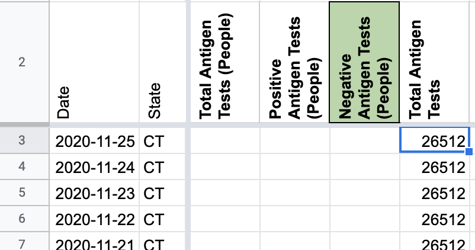
AFTER: 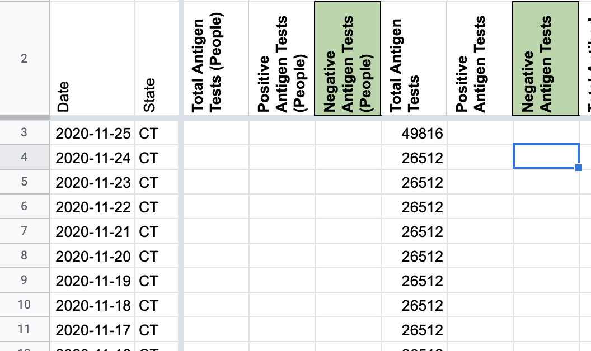
#946: [CT] Some total tests (PCR) values are duplicated in the peoplewise column they should be removed
Issue number 946
muamichali opened this issue on November 11, 2020, 8:58 AM PST
Labels Data quality
State or US: Connecticut
Describe the problem Some data is duplicated in the wrong column
Link to data source
Provide links to original data sources that we can refer to, like a state COVID website.

Comments
BEFORE: 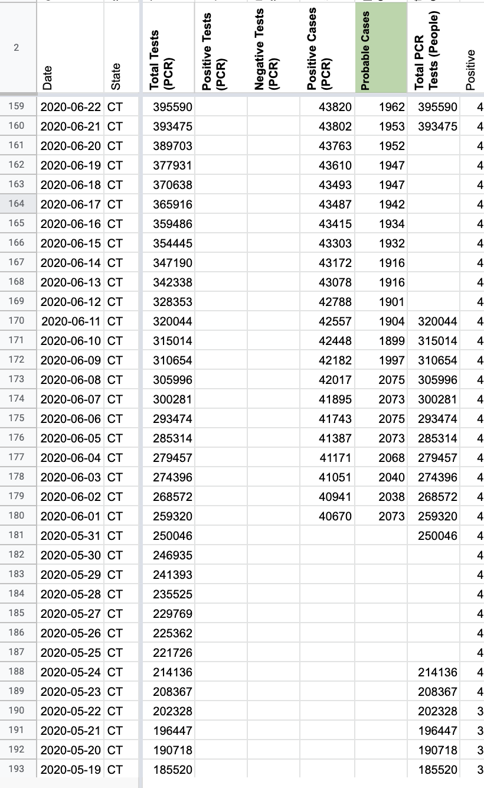
AFTER: 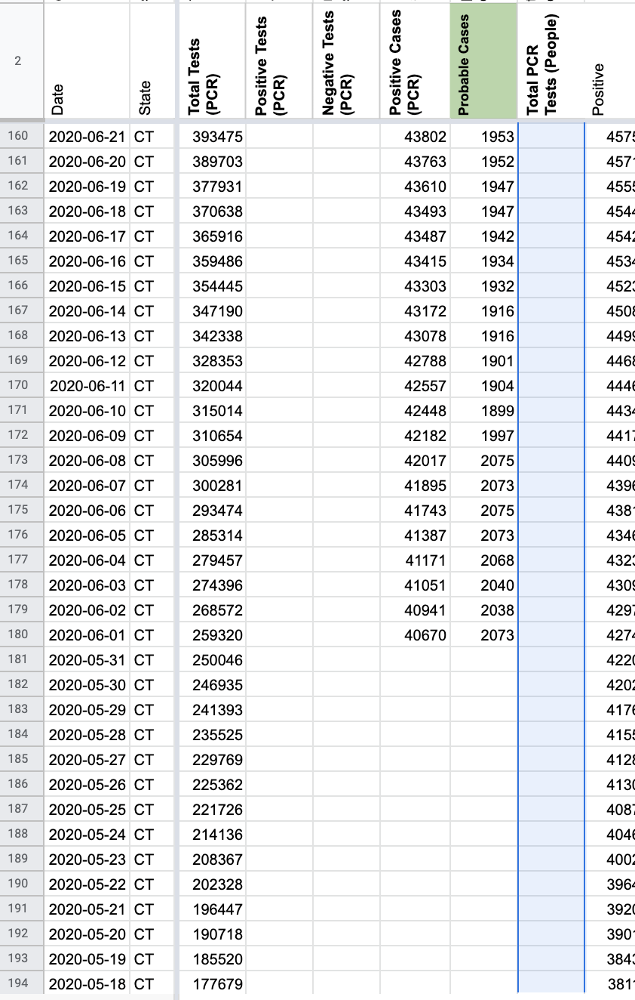
#942: [CT] Update Total Tests (PCR) & Negatives value for 11/6-11/9
Issue number 942
muamichali opened this issue on November 10, 2020, 7:54 AM PST
Labels Data quality
State or US: Connecticut
Describe the problem Starting on 11/5, Connecticut changed its reporting to lump antigen tests with PCR in the main testing number. We are backfilling our Positive Tests (PCR) and Negative (People or cases) numbers for 11/5-11/9 to use these values.
Link to data source https://portal.ct.gov/-/media/Coronavirus/CTDPHCOVID19summary11052020.pdf COVID-19 Tests Reported (molecular and antigen) 2455122
https://portal.ct.gov/-/media/Coronavirus/CTDPHCOVID19summary11062020.pdf COVID-19 Tests Reported (molecular and antigen) 2484685
https://portal.ct.gov/-/media/Coronavirus/CTDPHCOVID19summary11092020.pdf COVID-19 Tests Reported (molecular and antigen) 2574371
Comments
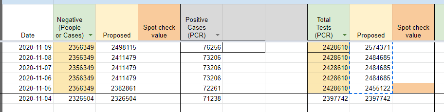
This issue has been automatically marked as stale because it has not had recent activity. It will be closed if no further activity occurs. Thank you for your contributions!
We've cleared their negatives, and backfilled their total tests in #1109, so I think this is done.
#935: [CT] Daily total reported tests now lump pcr and antigen tests. We need to use a different source
Issue number 935
space-buzzer opened this issue on November 6, 2020, 2:24 PM PST
Labels Data quality stale
The weekly report contains the breakdown, but it doesn't match the testing dataset exactly (the differences are not huge). We'll follow the data for a few days, to see whether anything else is changing and then update our sources
Comments
This issue has been automatically marked as stale because it has not had recent activity. It will be closed if no further activity occurs. Thank you for your contributions!
This issue has been closed because it was stale for 15 days, and there was no further activity on it for 10 days. You can feel free to re-open it if the issue is important, and label it as "not stale."
This issue has been closed because it was stale for 15 days, and there was no further activity on it for 10 days. You can feel free to re-open it if the issue is important, and label it as "not stale."
#932: [CT] Backfilling first day reporting Antigen tests (11/5)
Issue number 932
jaclyde opened this issue on November 5, 2020, 9:31 PM PST
Labels Data quality
State: Connecticut
Issue: CT started reporting antigens tests 11/5. Backfilling today's value.
Source: Daily Data Report from 11/5 CTDPHCOVID19summary11052020.pdf
Comments
#884: [CT] Fill out data for missed update on 3/28
Issue number 884
muamichali opened this issue on October 4, 2020, 5:07 PM PDT
Labels Data quality
State or US: Connecticut
Describe the problem CTP data entry missed an update on 3/28
Link to data source
https://portal.ct.gov/-/media/Coronavirus/CTDPHCOVID19summary3282020.pdf?la=en

https://github.com/COVID19Tracking/covid-tracking-data/pull/25
Comments
Updated! Thank you @mickley!
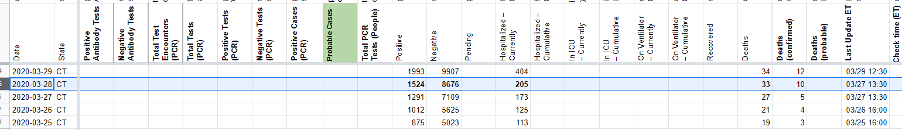
#877: [CT] Confirmed, Probable and Total Cases
Issue number 877
muamichali opened this issue on September 30, 2020, 9:53 AM PDT
Labels Data quality
State or US: CT
Describe the problem It seems that a previous backfill did not take weekend gaps into consideration #617
Link to data source Statewide XLS from CT's website as of 7/22
Comments
We updated the following fileds: Positive cases PCR -- between 2020-06-01 - 2020-07-21 Probable cases -- between 2020-06-01 - 2020-07-27 (on the 28th it was part of pubshift) Positives (lumped) -- A single values for for 2020-06-01: there was a small difference between the collected value during pub-shift and PDF and the number from the dataset provided by CT. We used the dataset value Negatives -- betwene 2020-06-01 - 2020-07-21 -- calculated value based on Total Tests PCR minus Positive cases PCR Total Tests PCR -- 2020-07-21 -- all the way down to the beginning of times (in practice, it shifted the series by 1 day, but all the values are the same)
#759: [NC] CTP Reporting Specimens Results in Total PCR Tests (People) Instead of Total Tests (PCR)
Issue number 759
jesseandersonumd opened this issue on August 13, 2020, 7:25 AM PDT
Labels Data quality
State: NC
Dates impacted: 5/13 - 8/12
Issue: Upon further outreach and review of the document linked in sources, we have updated our understanding of how NC reports total test results. NC's total tests include results from all tests administered for one person and have reported that the unit for total tests is specimens. Therefore, we should copy over all values from Total PCR Tests (People) to Total Tests (PCR) and report all values for total tests in Total Tests (PCR) from here on out.
Sources: https://www.ncdhhs.gov/news/press-releases/ncdhhs-corrects-covid-19-testing-totals-after-identifying-labcorp-reporting
Comments
BEFORE: 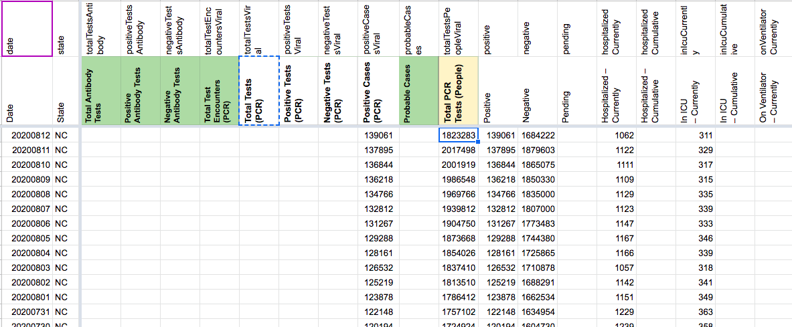
All values:
1823283 2017498 2001919 1986548 1969766 1939812 1904750 1873668 1854026 1837410 1813510 1786412 1757102 1724924 1691434 1663540 1635476 1613385 1579042 1550297 1523675 1491820 1458997 1423888 1394864 1379143 1343974 1312757 1284637 1254846 1220486 1199575 1176058 1150612 1121811 1096682 1071290 1051846 1036838 1018296 999293 971120 942238 910033 886305 871905 855131 836725 811278 791285 773828 757345 745775 731341 712313 693678 667422 651421 638479 627130 611690 595697 572677 553650 535711 520113 511226 497350 482147 468302 449263 434921 421908 416289 404157 391231 375192 364156 352331 344690 336656 329582 303224 290645 277603 265008 255755 238586 231547 210457 202244
AFTER:
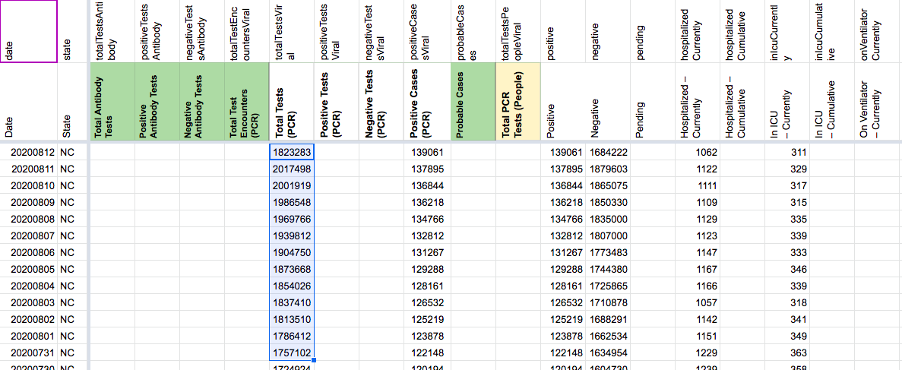
UPDATED in database:
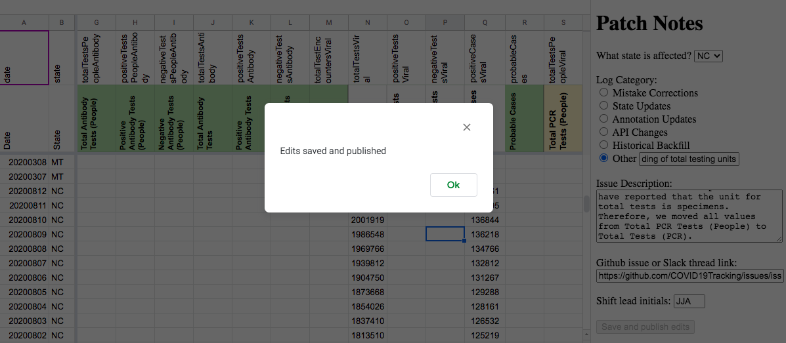
States Matrix before:
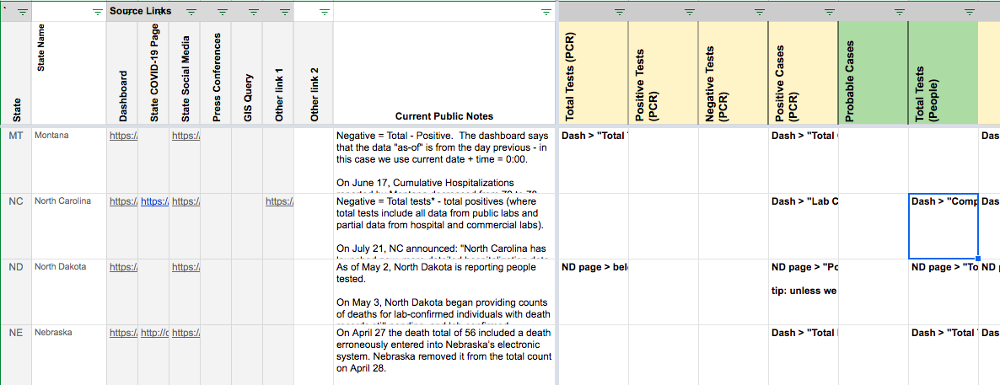
States Matrix after:
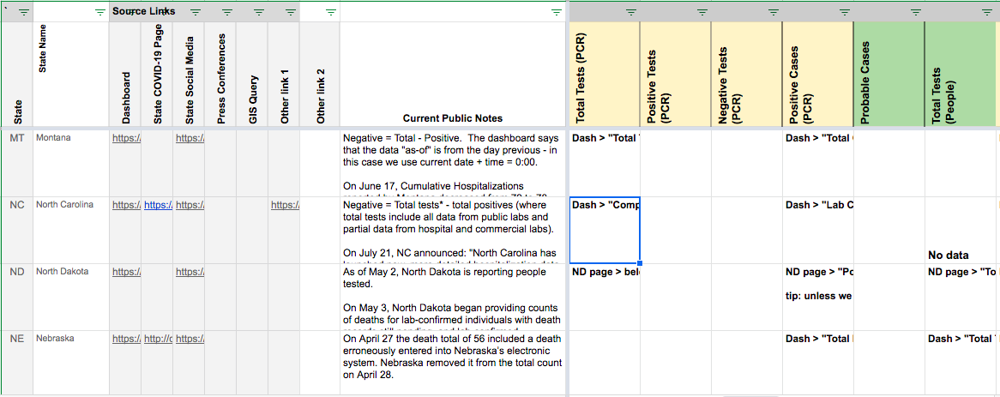
#721: [CT]Back-fill data added in the last 7 days that reflects cases (& tests?)
Issue number 721
muamichali opened this issue on July 31, 2020, 7:20 PM PDT
Labels Data quality not stale
State or US: CT
Describe the problem CT had two dumps of old test results from Enzo Labs, an out of state lab that just submitted their results to CT in two batches in the past 7 days. These data date back to April, but because they were dumped into CT totals now
Specifically this catch up data included 440 cases reported last Friday + 384 Wednesday = 824 cases that should be removed from our recent totals to better reflect recent trends.
Link to data source


Comments
@muamichali CT provides two time series for confirmed cases: positive cases by dashboard time and positive cases by specimen collection time. The former matches what we already have and includes the July 24 jump, the latter smooths that out but would result in mixing. I don't think there's much we can do until we have a "state revised time series" strategy in place.
Based on our meeting yesterday, I would say that this backfill would not meet the mixery-exception bar. (because it's not a new column where we're bootstrapping old history)
So, I would like to close this "won't fix". If CT puts pressure on us, that pressure should go towards adding a new column with approprirate "by date" assignment. I've started a slack conversation to get consensus.
There was some more discussion about just giving CT a new column (similar to RI and CO) instead of this. More to come.
This issue has been automatically marked as stale because it has not had recent activity. It will be closed if no further activity occurs. Thank you for your contributions!
Does not meet the mixery-exception bar.
#617: [CT] PCL Cases Historical
Issue number 617
pscsharon opened this issue on July 13, 2020, 7:54 AM PDT
Labels Backfill PCL/SVP Historicals
We started recording CT's confirmed cases on

However, CT's data set shows the state only separated confirmed and probable starting May 31st.
https://data.ct.gov/Health-and-Human-Services/COVID-19-Cases-Hospitalizations-and-Deaths-By-Coun/bfnu-rgqt
Here's the XLS download. COVID-19_Cases__Hospitalizations__and_Deaths__By_County_.xlsx
Please confirm is the historicals between 4/29 and 5/31 are truly confirmed cases.
Comments
CT publishes many datasets. In their COVID-19 Tests, Cases, Hospitalizations, and Deaths (Statewide) dataset, confirmed cases are reported starting 31-May. In the COVID-19 Cases by Date of First Positive Specimen dataset, we have positive PCR results dating back to March.
The later is given as a daily new, here's a cumsum time series, CSV file as txt. COVID-19_Cases_by_Date_of_First_Positive_Specimen_cumsum.txt
We decided to use the CT data for confirmed cases and total tests by report date. This confirmed case data only goes back to 6/6 and looks different than the data we had previous to those dates. We decided to remove the previous data and instead backfill the official data into the Positive Cases (PCR) column. Negatives were also adjusted accordingly. Meanwhile we took the opportunity to extend the Total Tests (PCR) column back much farther with CT's official data.
We considered but didn't use their confirmed cases by specimen collection, which goes back much farther but is incompatible with the values coming from future data entry.
Analysis spreadsheet, including old and new values: https://docs.google.com/spreadsheets/d/17rcCfHaT76c07Ghd-QCeKqzUlBep8eNGclTS7npnQ-I/edit#gid=616640974
#509: [CT Historicals] May 27th numbers
Issue number 509
schmian opened this issue on June 22, 2020, 6:18 AM PDT
Labels Historical Data
"Connecticut May 27 positive tests are 41,303 The COVID Tracking Project historical and current, but the Connecticut snapshot lists 41,288. Based on the snapshot it appears that Connecticut subtracted 15 positive tests."
Comments
CT actually subtracted a couple hundred positives and more total tests. The net change was -15. See CT's note is here: https://portal.ct.gov/-/media/Coronavirus/CTDPHCOVID19summary5272020.pdf?la=en
Before: 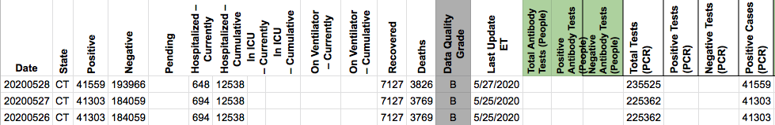
After: 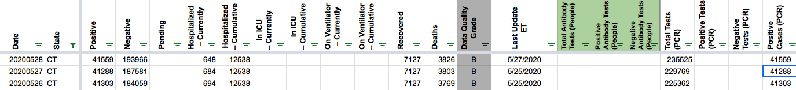
Added the following to CT's public note: On May 27, CT reported they had "removed 356 cases and 808 tests...which were identified as duplicates in the system." When combined with actual new cases, these removals resulted in a net reduction of 15 positives on 5/27.
#463: [SC Historicals] Cases when SC reporting seems to not match CTP reporting
Issue number 463
muamichali opened this issue on May 28, 2020, 8:33 AM PDT
Labels Data quality stale
From Front https://app.frontapp.com/open/msg_dlyhb2p
Here is the Excel file for South Carolina. The individual numbers are colored. Black is for when the numbers have been verified through the daily state reports. Blue is for when I could not find a copy of the daily report and relied on the numbers from The COVID Tracking Project. Orange is when I verified the numbers through a tertiary source. This is almost always the Twitter feed for the state's Department of Health. Red is for when I verified the number through the state's daily reports and those numbers did not correspond to the one presented in The COVID Tracking Project.
The red numbers can be compared to the daily state screenshots. Sometimes the variance is minor. In South Carolina, The COVID Tracking Project had several instances where the numbers were repeated from date to date when the numbers did change in the daily screenshots.
Comments
This issue has been automatically marked as stale because it has not had recent activity. It will be closed if no further activity occurs. Thank you for your contributions!
This issue has been closed because it was stale for 15 days, and there was no further activity on it for 10 days. You can feel free to re-open it if the issue is important, and label it as "not stale."
This issue has been automatically marked as stale because it has not had recent activity. It will be closed if no further activity occurs. Thank you for your contributions!
This issue has been closed because it was stale for 15 days, and there was no further activity on it for 10 days. You can feel free to re-open it if the issue is important, and label it as "not stale."
#441: CT negatives were calculated incorrectly on 5/21 (data entry error)
Issue number 441
muamichali opened this issue on May 22, 2020, 6:54 AM PDT
Labels Historical Data
calculation was =196447-32908 instead of =196447-39208 which caused number of tests to inflate
Comments
Negatives calculation transposed two digits 196447-32908 instead of 196447-39208 which caused phantom tests to be reported.
I updated Worksheet2 and States Daily. It should be reflected on the site/API within an hour.
BEFORE 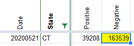
AFTER 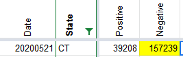
CT started lumping PCR and antigen tests on Nov 5th, 2020. This will correct the reported lumping by CTP